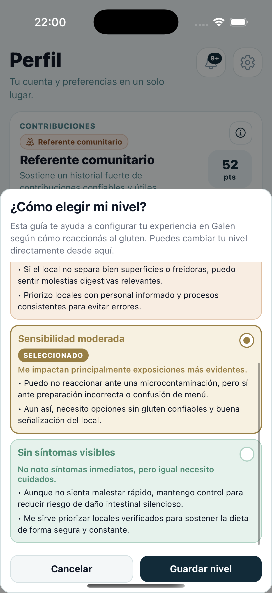
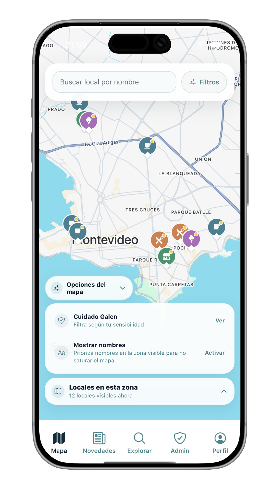
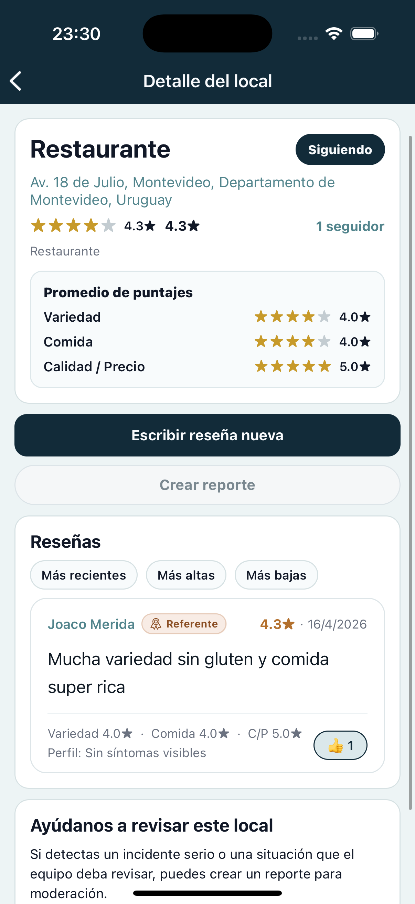

Perfil
Ajustá la experiencia a tu sensibilidad.
Configurá tu nivel y ordená mejor la información que ves en la app.

Hecha para decidir mejor en el día a día
Descubrí lugares, leé reseñas y revisá reportes en una app pensada para ayudarte a decidir con más claridad.
La información que ves está previamente validada por nuestro equipo de moderación.

La experiencia
Desde el mapa hasta las reseñas y el perfil de sensibilidad, Galen organiza señales clave para ayudarte a elegir con más claridad.
Configurá tu nivel y ordená mejor la información que ves en la app.

Accedé a puntajes, contexto y reportes útiles en una sola vista.

Lo importante
Lo que ves en la app pasa por validación y moderación antes de ganar visibilidad.
Tu nivel de sensibilidad ayuda a ordenar mejor la información que aparece.
Lugares, reseñas y reportes se presentan para ayudarte a elegir con más claridad.
Reportes
Ayudan a señalar situaciones relevantes, sumar contexto y ordenar mejor la decisión.
Nuestro equipo de moderación revisa estos aportes antes de hacerlos visibles.
Cuando corresponde, pueden derivar en revisión interna o contacto con el local.
Suman señales concretas para ayudarte a decidir con más información.
Producto
Galen organiza información útil para evaluar opciones gastronómicas con más claridad.
Accedé a fichas de locales, categorías y señales clave para entender mejor cada opción.
Las experiencias se presentan de forma que ayuden a interpretar mejor lo que puede servirte.
Encontrá alertas y observaciones que pueden sumar criterio al momento de decidir.
Tené más a mano las opciones que te interesan y seguí sus cambios con el tiempo.
La app reúne novedades y avisos relevantes para que no dependas de información dispersa.
Hay herramientas internas para validar contenido, ordenar señales y sostener la calidad general de la información.